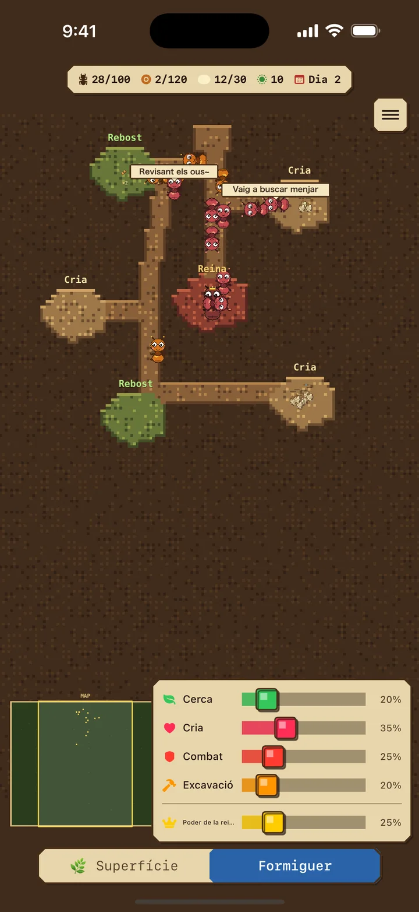
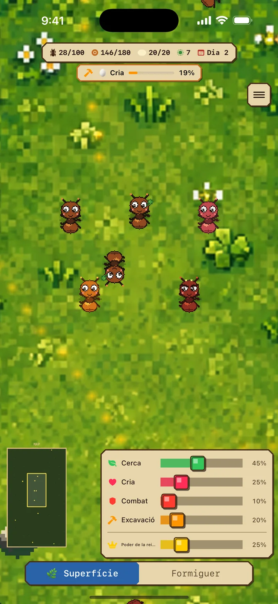
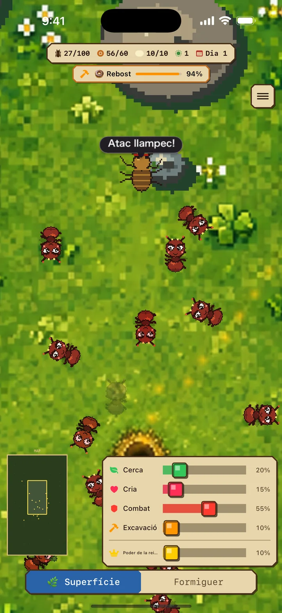
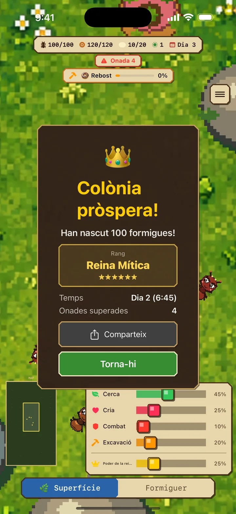

Recol·lectores (verd)
busquen menjar a la superfície i el porten al formiguer
Diari de Formigues iOS
Joc de simulació de colònies de formigues i estratègia en temps real
«Diari de Formigues» és un joc d'estratègia en temps real on cries una colònia de formigues. Ajusta els rols de les obreres al voltant de la reina, supera les envestides dels enemics i construeix una colònia pròspera de 100.
Gratuït · Conté anuncis / Per a iPhone / iOS 17.0+


01 Explora 2 mons
Quan assignes obreres a excavar, el niu creix de manera orgànica des dels túnels existents i es formen magatzems d'aliment o cambres de cria segons calgui.
Superfície: un món perillós on es busca menjar i es lluita
Formiguer: un refugi segur per criar larves i excavar cambres noves
Les cambres augmenten la capacitat d'aliment i cria. Si el magatzem és ple, les recol·lectores esperen i reprenen la feina automàticament quan queda espai.
02 4 rols per plantejar l'estratègia
Ajustar l'equilibri dels rols a cada situació és la clau per sobreviure.
busquen menjar a la superfície i el porten al formiguer
alimenten les larves per criar noves obreres
combaten els enemics i defensen la colònia
Excava per ampliar el niu — Completar sales augmenta la capacitat d'aliment i cria
Augmenta el Poder de la Reina per pondre ous fins a 3 vegades més ràpid. A canvi, la fam creix fins a 8 vegades més de pressa i les cuidadores l'alimenten, transporten ous i cuiden larves. Adapta el poder a la colònia.

03 Defensa't de les onades
Amb el temps, els atacs es tornen més ferotges. Augmenta els soldats abans que arribin.
Ajustar l'equilibri dels rols a cada situació és la clau per sobreviure.
Descarrega a l’App Store04 Repte contrarellotge
El teu temps fins a 100 formigues decideix quin dels 6 rangs obtens. Baixa de 15 minuts per ser Reina Mítica i comparteix el resultat en una targeta que canvia de disseny segons el rang.
El temps que trigues a arribar a 100 formigues és la teva puntuació. Busca el millor registre i torna-hi tantes vegades com vulguis!


Diari de Formigues
Protegeix la reina i fes créixer la colònia fins a 100 formigues!
Descarrega a l’App StoreGratuït · Conté anuncis / Per a iPhone / iOS 17.0+